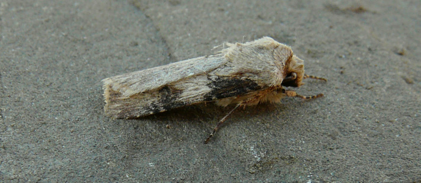
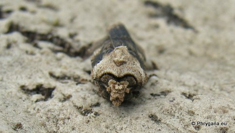
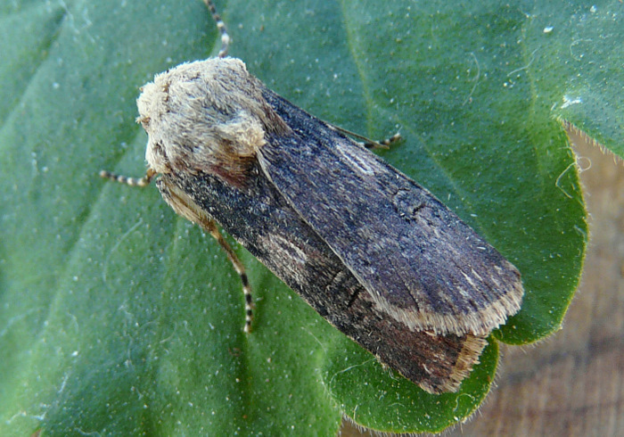
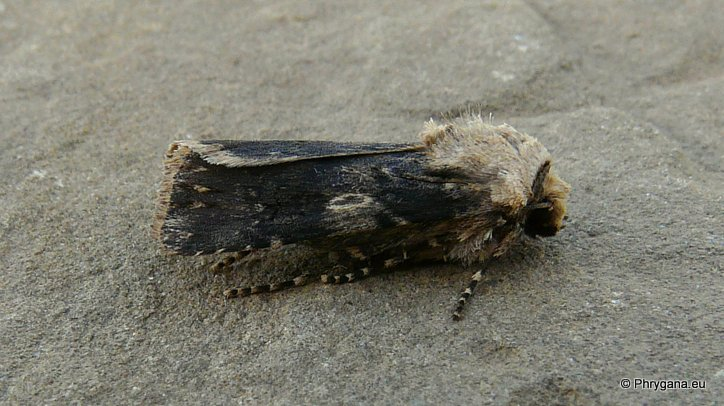
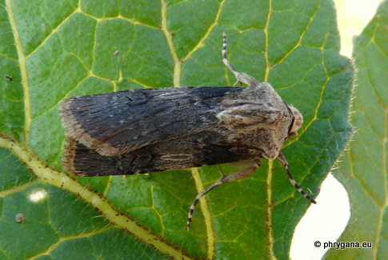
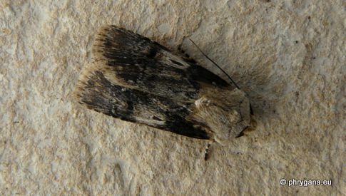

")
Agrotis puta Rosières (Belgique) 22 mai 2004 Agrotis puta Rosières (Belgique) 11 mai 2005
Agrotis puta Melambes (Agios Giorgos) 08 octobre 2009
Agrotis puta Melambes (Agios Giorgos) 05 mars 2010
Agrotis puta Melambes (Agios Giorgos) 06 mars 2011
| PHRYGANA | Fauna | Flora | Galles | liste des espèces |
contact -
info - commentaires phrygana1 (at) gmail.com |
| Particularités crétoises | nouveautés | Mines | ressources naturelles |
| Agrotis puta (Hubner 1803) |
| 143 | Fauna | LEPIDOPTERA | NOCTUIDAE | Noctuinae | Noctuini | Agrotis Ochsenheimer 1816 |
 Agrotis puta Melambes (Agios Giorgos) 28 février 2010 |
| en: Shuttle-shape Dart fr: la Noctuelle des renouées de: Schmalflügelige Erdeule nl: Puta-uil |
| Envergure: 30 - 34 mm. Les mâles ont des ailes antérieures claires (blanc sale à brun clair) avec des marques brun noir. Les femelles sont elles, brun noir avec la réniforme soulignée noire.L'ovale est allongée en navette |
| Chenille: polyphage: diverses plantes herbacées dont Rumex sp. |
| Nymphose dans le sol |
| Espèce plurivoltine; période de vol: février mars avril septembre octobre novembre décembre |
| Statut en Crète: indigène |
| Biotopes en Crète: phrygana, olivaies, garrigue, jardins, parcs, cultures. |
| Distribution: Europe de l'Ouest et méridionale, Turquie, Moyen-Orient, Afrique du Nord. |
| Belgique: présent; lisières, parcs, jardins arborés, prairies, banquettes alluviales |
| Note: vient à la lumière |
|

Agrotis puta Rosières (Belgique) 22 mai 2004 Agrotis puta Rosières (Belgique) 11 mai 2005 |
|
 Agrotis puta Melambes (Agios Giorgos) 08 octobre 2009 |
|  Agrotis puta Melambes (Agios Giorgos) 05 mars 2010 |
|

 Agrotis puta Melambes (Agios Giorgos) 06 mars 2011 |
| 07 février 2013 |
| © paul fontaine -- © Phrygana.eu 2007 -- 2013 |